常用文件夹列表简介
常用文件夹列表是您最常使用的目录的可用列表。
它在磁盘上不创建任何内容，只是一个快捷方式列表，用于快速访问 “最常用的” 目录。
通过使用它们跳转到一个目录，你就不会像猴子一样在树的不同分支间不断跳跃。
此外，对于那些重要的目录，您不想忘记，最好有一个区域，其中包含指向它们的快捷方式。
即使你不经常使用它们，当你需要它们时，你也会节省时间，因为你不必去寻找它们。
Double Commander允许指定本地文件系统中的目录、网络路径或 WFX 插件（如“wfx://插件名称”）。
以下是与热名单相关的常见操作
从菜单栏中选择“命令”，然后选择“常用文件夹列表”。 它看起来像一个弹出菜单，您点击项目后，它会带您到您设置的条目所定义的目录。
您可以点击活动文件面板右上角带星星的按钮。
您可以添加一个与内部命令 cm_DirHotList 相关联的工具栏按钮。
您可以设置一个热键用于 cm_DirHotList 命令（默认是 Ctrl+D ）。
您可以在活动标签的当前目录栏上双击或使用中间鼠标键。
从菜单栏中，您可以选择 "配置" 然后选择 "常用文件夹列表"。
您看到的树将显示与您在主面板的弹出常用文件夹列表中看到的内容相同。
但您看到的不是弹出菜单的形式，而是一个树形结构，包含许多功能用于编辑、移动等，正如您在此帮助文档中看到的那样。
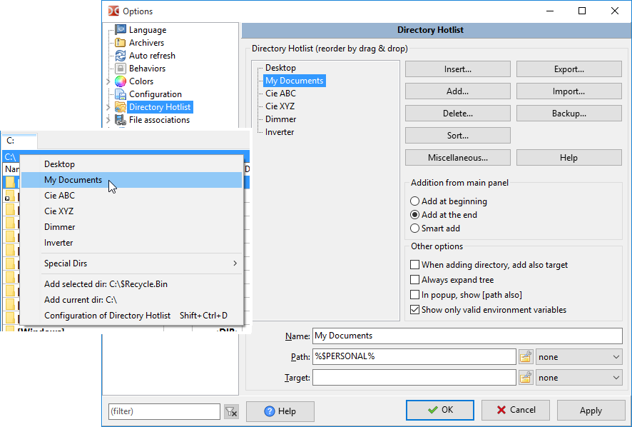
在常用文件夹列表弹出菜单的底部，总是有一个菜单快捷方式可以带您到常用文件夹列表配置屏幕。
您可以添加一个带有内部命令的工具按钮 cm_ConfigDirHotList。
最简单的方法是这样的：
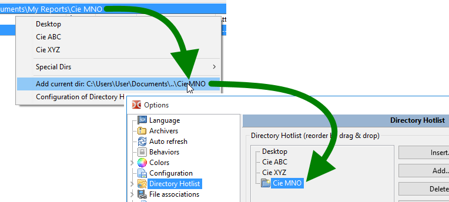
稍后，我们将看到还有许多其他方法可以将条目添加到常用文件夹列表中。
默认情况下，当将目录添加到常用文件夹列表时，条目名称将是最后一个目录的名称。
但是如果你想的话，可以重命名它。只需选择字段 "名称"，然后输入一个容易记住的参考名称。
在这个例子中，文件夹的名称是“doc”，但条目的名称是“文档”
这也是您在常用文件夹列表弹出菜单中看到的方式。
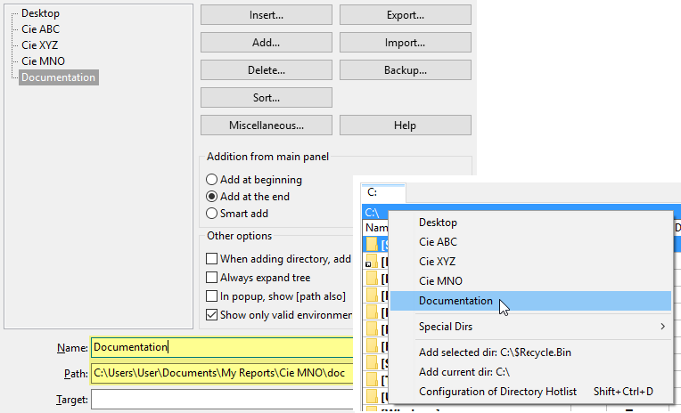
在名称中，符号“&”具有特殊含义，我们可以用键盘快速选择一个目录，只需在其中一个字母前添加一个“&”符号。要按原样使用此符号，我们必须将其加倍（“&&”）。
不仅您可以添加要切换到的目录，还可以选择“目标目录”，该目录将在主窗口的非活动面板中显示。
因此，对于在一段时间内需要将内容从目录“A”复制到目录“B”的常见重复操作，无论您之前在哪个文件夹中，您只需从常用文件夹列表菜单项中选择它，它将把两侧设置为定义的目录，准备进行操作。
要定义在选择常用文件夹列表条目时的目标目录，只需设置字段“目标”。
以下示例显示了“目录 A”，以“目录 B”作为目标，如此处所建议的。
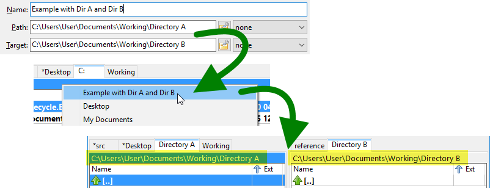
在"路径(P)"和"目标(T)"字段的末尾，您有一个下拉框。
使用此下拉框可以在选择常用文件夹列表条目时预先确定面板的排序顺序。
所以如果你将其设置为"日期 9-0"，当你使用常用文件夹列表时，它不仅会将活动路径移动到定义的路径，而且无论面板之前是如何排序的，它都会按逆时间顺序进行排序。
如果您不想通过常用文件夹列表选择新路径来更改任何内容，请将此字段设置为“无”。
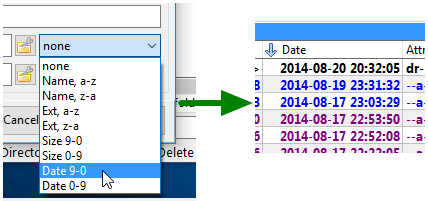
当然，您可以使用绝对路径，它在这台机器上运行良好。
但假设你有一个带有许多其他工具的Double Commander在你的瑞士军刀 USB 闪存驱动器上。
您可能希望为可移植安装使用相对路径。
我指的是相对于Double Commander路径的意思，例如。
所以你可能有这个路径 "E:\PortableApps\Notepad++Portable\Data\Config\"，它工作得很好。
但您也可以将其相对于当前的“Double Commander”路径，并使用这个“%commander_path%\..\..\Notepad++Portable\Data\Config\”。
为了帮助您确定输入什么（换句话说，使用多少个“..\"！），在“路径”和“目标”字段的右侧，您有一个小按钮  ，它会弹出一个菜单，提供各种相关的小工具来编辑和安排路径，以您希望的方式。
，它会弹出一个菜单，提供各种相关的小工具来编辑和安排路径，以您希望的方式。
但这只是那个按钮可能用途之一。
这里是您在那儿会找到的完整摘要：
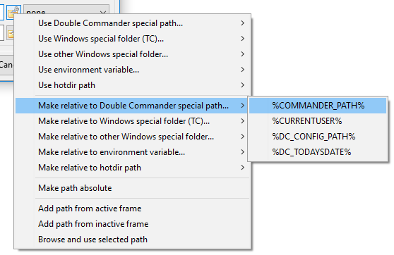
随着时间的推移，常用文件夹列表可能会变得更长且无序。
您可以通过拖放所选条目到一个对您更有意义的新位置来简单地重新排列顺序。
通过使用键盘上的 Ctrl 键，您可以同时选择并移动多个项目。
如果您有一个非常长的目录列表，拖放方法可能不适用，因为源和目标之间的距离太远。
如果是这样，您可以选择要移动的条目，然后点击“杂项”按钮以调用弹出菜单并选择“剪切所选条目”。
然后您滚动列表以查看要放置所选条目的目标位置。
然后您再次点击“杂项”按钮，选择“粘贴已剪切的内容”以粘贴您首先选择的条目。
通过使用 Ctrl 键，您可以同时选择多个条目进行剪切和粘贴。
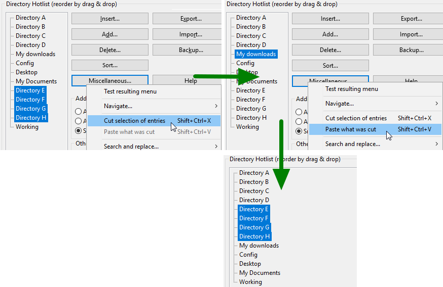
如果你是常用文件夹列表的粉丝，就像这些文字的作者一样，单一的常用文件夹列表是远远不够的！
所以，Double Commander来救援了。您可以在常用文件夹列表中创建和组织子菜单。
不仅如此，您可能在另一个子菜单中还有子菜单。
这意味着您可以真正为自己配置一个组织良好的常用文件夹列表。
要添加子菜单，请使用“插入”（添加到当前位置）或“添加”（添加到下方）按钮。您还可以使用快捷键。
它将创建一个名为“子菜单名称”的子菜单，其中包含一个名为“常用文件夹名称”的条目。
显然，通过下面的字段，您可以为子菜单赋予一个重要的名称。
从那里，您可以添加新条目，将其他条目移动到该新子菜单中。
请注意，您可以移动或剪切粘贴子菜单，这样在重新排列您的常用文件夹列表时会让您的生活更简单。
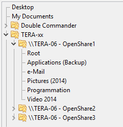
有很多条目一个接一个是不错的，但通过添加一些分隔符来创建类别可能会为您的列表带来秩序。
要添加分隔符，请使用“插入”（添加到当前位置）或“添加”按钮（添加到下方）。您还可以使用快捷键。
在配置常用文件夹列表树中，它会显示一条带点的线，但一旦进入带有常用文件夹列表弹出窗口的主面板，您将看到一个漂亮的菜单分隔符。
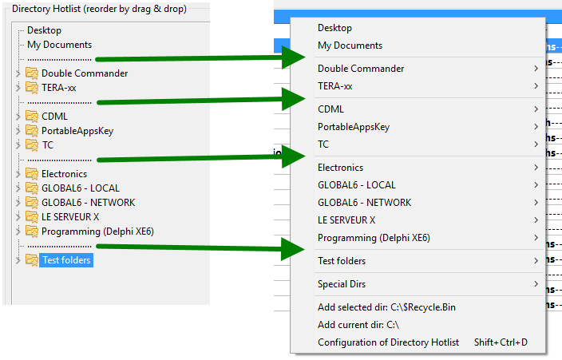
如上所述，通过拖放和剪切粘贴，您可以按照自己的意愿重新排列常用文件夹列表条目。
但如果您同意使用字母顺序的名称，您可以使用包含的排序功能。
这个排序的想法很简单：将当前选择放在您想要排序的位置，然后通过按下“排序...”按钮选择您想要的排序功能，这将弹出一个菜单。
这五个可选项为您在此问题上提供了所有可能的自由度
如前所述，任何类型都不会移动物品以跨越分隔符。
为了确保您理解在排序时不跨越分隔符的含义，请参见以下示例。
“根”文件夹在排序后将始终位于其他文件夹之上，因为那里有一个分隔符。
分隔符在这个问题上非常有用。
不仅使事情更加清晰，而且在排序时作为分隔符也很有用！
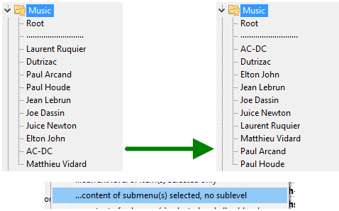
以下是与常用文件夹列表相关的较少频繁的操作，但仍然值得了解。
随着您的常用文件夹列表中目录快捷方式的数量增加，您可能想要备份它，以防发生意外而丢失这些宝贵的链接。
要做到这一点，在配置屏幕的右侧有一个名为"备份"的按钮。点击它，然后在菜单中选择"保存当前常用文件夹列表的备份"。
它将把当前列表保存到一个文件中，该文件位于Double Commander定义的配置目录中的“备份”文件夹中。文件名将包含当前的日期和时间。请注意文件的扩展名是“.hotlist”。
要恢复，请在同一菜单中选择“恢复常用文件夹列表的备份”。在出现的文件请求器中，选择您要恢复的备份。
当您恢复备份时，它将首先删除当前的常用文件夹列表，然后添加备份文件中的条目。
如果您只想从备份文件中恢复某些条目，您可以执行 "导入" 并指向备份文件。然后，Double Commander会提示您指明要从备份文件中恢复哪些条目。
如果您有超过一台计算机，或者如果您有同事访问与您相同的服务器，您可能希望能够导出您的常用文件夹列表或其部分内容，这样在另一台计算机上您就可以拥有相同的目录快捷方式，而无需逐个输入。
要做到这一点，首先点击按钮 "导出"，然后选择 "...到常用文件夹列表文件 (.hotlist)"。
它将提示您输入要创建的导出文件的文件名和文件位置。
然后您将被要求选择要导出的内容。
您可以导出整个树形结构，也可以逐个选择条目。
您可以通过选择子菜单名称来选择整个子菜单，而无需选择其中的条目。
请在点击选择您想导出的不同条目时使用键盘上的 Ctrl 键。
然后，在另一台计算机上，您将点击“导入”按钮，然后选择菜单项“从常用文件夹列表文件 (.hotlist) 导入”。
从文件请求者中，指向要导入的文件。
与导出类似，您可以导入整个内容，但也可以选择您想要导入的特定条目。
您导入的条目将被添加到您的条目末尾。
Double Commander还可以从 Total Commander 导入/导出常用文件夹列表。
假设您想从 Total Commander 导入一些条目，以下是操作步骤。
从常用文件夹列表配置屏幕，点击 "导入..." 按钮并选择 "...来自 TC 的 "wincmd.ini""。
然后在文件请求器中选择您的 Total Commander 的 "wincmd.ini" 文件的位置。
如果您不知道那个文件在哪里，在 Total Commander 中，点击 "帮助" 菜单，然后点击 "关于 Total Commander..."。
.INI 文件的位置将会写在那里。
然后将出现一个树形结构，显示从 Total Commander .ini 文件中读取的目录条目。
从那棵树上，您可以导入所有条目，或者根据需要逐个选择。
请在点击选择您想要导入的不同条目时使用键盘上的 Ctrl 键。
您导入的条目将被添加到您的条目末尾。
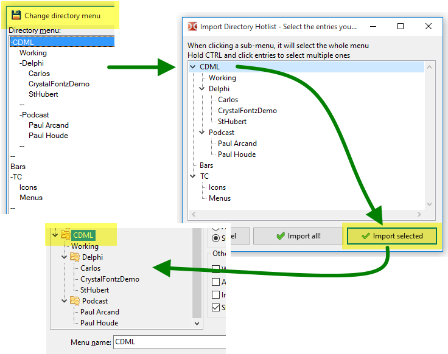
然后，作为反向操作，您可以将所有或部分的 Double Commander 常用文件夹列表导出到 Total Commander 的热列表中。
要做到这一点，请点击“导出...”按钮，并选择两种可能的导出方式之一到 Total Commander。
如果您知道自己在做什么并接受替换 Total Commander 的常用文件夹列表的所有条目，您可以选择 "到 TC 的 "wincmd.ini"（删除现有内容）"。
再一次，在这里，您可以选择是否要导出整个内容，或者只选择您想要导出的部分。
请在点击选择您想导出的不同条目时使用键盘上的 Ctrl 键。
也许你在这样做的时候应该关闭 Total Commander，然后再重新打开 Total Commander，看看你得到了什么。
Total Commander 并不像 Double Commander 那样为您提供简单的方法来结构化和轻松排序常用文件夹列表中的条目。
所以您可以将 Total Commander 的常用文件夹列表导入到 Double Commander，然后重新排列、排序、结构化等，然后再导出回 Total Commander！
*注意：已进行努力和测试，以确保应用程序不会损坏 Total Commander 配置 .INI 文件。
但在导出之前备份一些条目无疑是一个好习惯，并且是被鼓励的。
显然，你这样做是自担风险！
...发现一个像Double Commander这样好软件的风险！
随着时间的推移，您的常用文件夹列表中可能会出现指向不再存在的目录的条目。
要找到这些条目，在常用文件夹列表配置屏幕中，点击标记为“杂项”的按钮。
然后选择"扫描所有常用文件夹列表的路径以验证实际存在的路径"。
这将使应用程序能够扫描所有快捷方式指向的目录。
如果缺少某个项目，条目左侧将显示一个缺失图标。
子菜单分支中如果有至少一个缺失的条目，将显示一个特殊图标，表示有条目缺失。
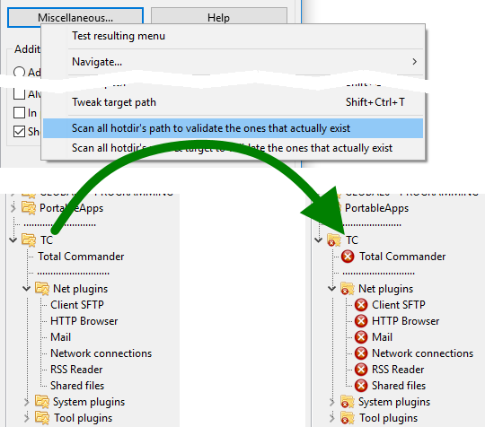
因此，您可以选择删除那些指向已不存在目录的条目，或者保留它们。
为什么要保留它们？很简单。在一个使用Double Commander的上下文中，从一个计算机到另一个计算机的 USB 闪存驱动器上，可能会有一些在前一个计算机上存在但在当前计算机上不存在的目录，这完全是正常的。
但是如果是这样，"扫描所有常用文件夹列表的路径以验证实际存在的路径"功能将如何帮助你？
这样做的原因是，它还会从主面板的常用文件夹列表弹出菜单中删除这些条目。
这些指向不存在文件夹的条目将不会显示！
它们不会从常用文件夹列表内部列表中永久删除。
它们将在会话中不会从弹出菜单中显示。
查看上一个例子的结果。
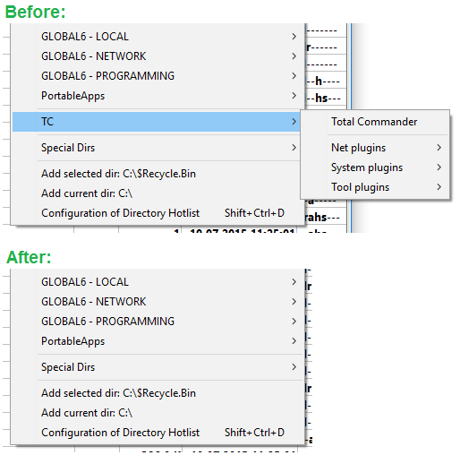
在为新情况设置常用文件夹列表时，您可能希望一次性添加多个目录到常用文件夹列表中。
你可以通过两种方式做到这一点。
第一种方法：直接从主框架中选择
这很简单：您只需选择要添加的目录，调用常用文件夹列表弹出菜单，然后在菜单的末尾选择“添加 x 个选定目录”。
目录将被添加到配置的附加位置。
如果您配置为通过“智能”方法添加，那么看到它们放置得如此好真是太好了！
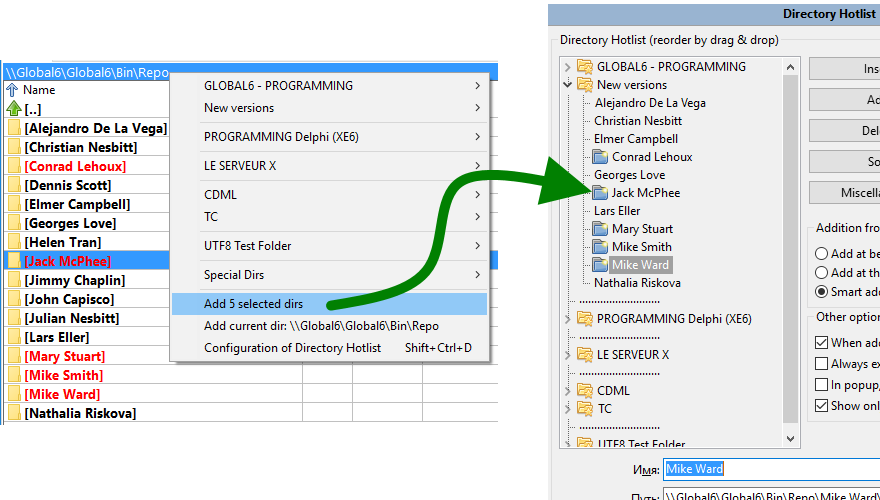
第二种方法：与第一种方法类似，但同时显示常用文件夹列表配置窗口和主面板
这也很简单：您首先调用常用文件夹列表配置窗口。
然后您将选择放置在您希望添加新目录的位置。
您然后按下 "插入"（添加到当前位置）或 "添加"（添加到下面）按钮，然后点击 "当前选定或活动框架的活动目录"。
您将看到它们被添加或插入，并准备好按照您的意愿进行排序、重命名和排列。
那个几乎是一个隐藏功能。
如在本页第 2.7 点中所述，您可能已配置常用文件夹列表条目，以便在非活动框架中切换到指定的目标目录。
但有时，可能希望不切换目标文件夹，而只切换主活动框架。
您可以通过这个小技巧来避免这个问题：在点击常用文件夹列表弹出菜单中的快捷方式时，按住键盘上的 Ctrl 键。
如果在点击快捷方式时按住 Ctrl 键，则只有活动框架会切换，目标不会。
那个也是一个几乎隐藏的功能。
当您在浏览常用文件夹列表弹出菜单时，您可能会看到一个您希望更正的错字，或者某些内容的组织方式不符合您的期望。
当然，您可以点击下方进入配置，在树中搜索它的位置，然后继续进行您的修正。
但有一个小窍门可以做得更好、更快、更简单。
在常用文件夹列表弹出菜单中，点击您希望直接进入配置窗口以按您的喜好进行配置的菜单项时，请按下键盘上的 Shift 键。
如果在您点击快捷方式的瞬间按住 Shift 键，DC 将带您进入配置屏幕，您可以根据自己的需要编辑选项。
你不需要在列表中搜索它！
在常用文件夹列表配置屏幕中，有一个复选框叫做"在弹出窗口中显示[路径也]"。
此选项被勾选时，将指示Double Commander在弹出条目中直接显示快捷方式指向的完整路径。
所以你不仅会看到你给的常用文件夹列表名称，还会显示如果你点击它将跳转到的完整路径。
这可能会很烦人，因为它在屏幕上增加了很多文字，我们可能会厌倦看到这些。
但在某些情况下，特别是涉及到 Windows 定义的目录和指向目录的环境变量时。
很高兴能直接了解每个指向的路径和方向。
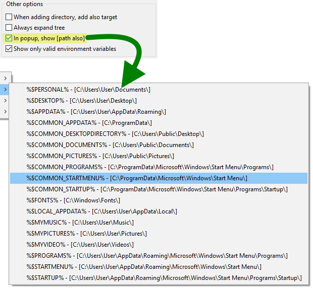
在常用文件夹列表弹出菜单的“特殊目录”部分，您会看到可以使用环境变量。
并不是所有的变量实际上都是一个目录。
在常用文件夹列表配置中，您可以勾选选项“仅显示有效的 %env_var%”。
当选中此选项时，DC 将尝试从菜单中消除看起来像有效路径的环境变量，至少是在其开头部分。
它不会必要地搜索和验证路径是否实际存在，以免没有真正的需要而减慢速度，但会迅速排除明显不相关的路径。
可能还有一些其他的小功能和可能性与 Double Commander 常用文件夹列表功能相关，这些在应用程序中存在但未在此描述。
保持这样的帮助文件更新是困难的（有时甚至令人烦恼，尽管仍然是必要的）。
但你肯定会弄明白大部分内容，而这个帮助部分至少涵盖了问题的最重要点。